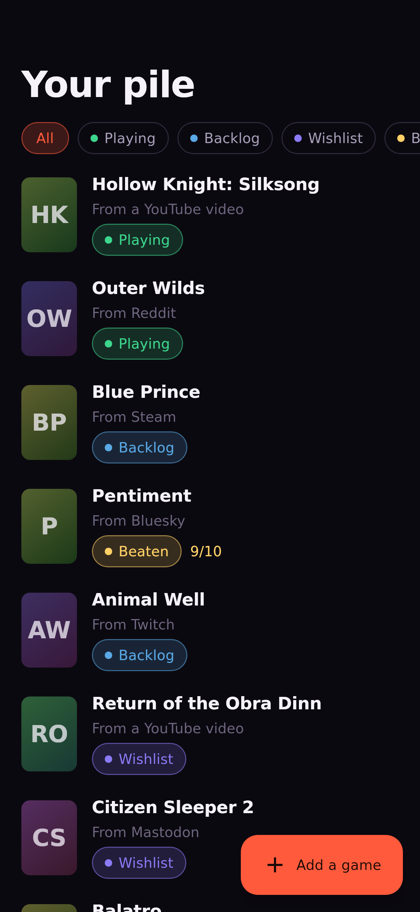
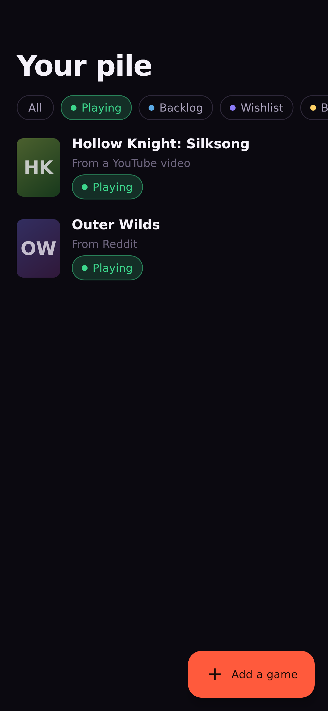
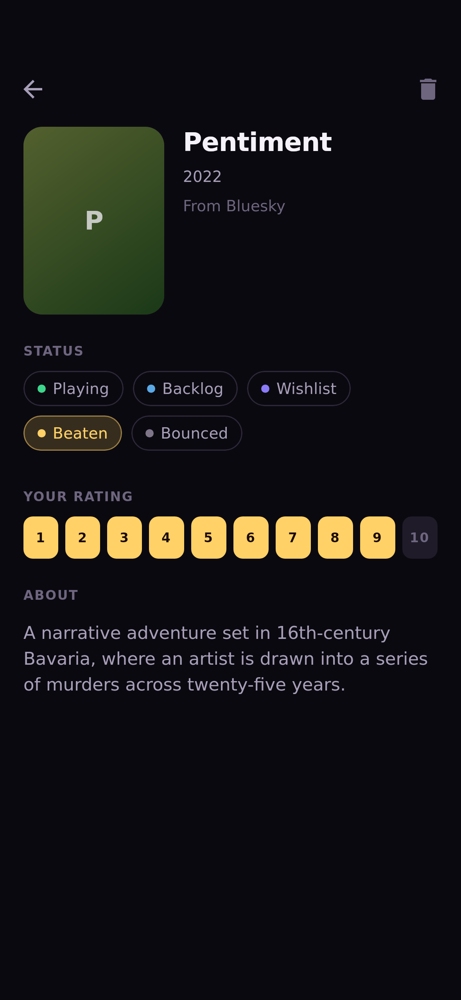

Backlogue
Every game you meant to play.
A gaming bucket list built around the one moment every other backlog app misses: the second you discover a game.
Nobody's backlog is accurate
Every tracker on the market competes on the same thing: organising games you've already saved.
That's the wrong battle. The failure happens earlier — most games never make it into the list at all.
Discovery and saving happen in different places
You're three minutes into a review. Something looks good. To save it, the app asks you to leave the video, open it, search for the game, and file it.
Almost nobody does that. The game is forgotten by the time the video ends.
So don't build an app. Build a share target.
Backlogue lives in the share sheet. You never leave what you were doing.
Watching a video, reading a thread, browsing a store page. Something catches your eye.
Share → Backlogue. One tap, from inside the app you were already in.
It's saved. Before the video finishes buffering — with a note about where you found it.
Turning a clickbait title into a game
A YouTube share arrives as decorated noise. A Steam share has the answer sitting in the URL. Both have to resolve without the user typing a character.
What arrives
🔥 SILKSONG IS FINALLY HERE
— First 3 Hours | IGN
https://youtu.be/…
What we search
Silksong
Bracketed tags, hype words, and 50+ noise phrases stripped — but biased toward under-cleaning, because search tolerates extra words far better than a butchered title. Steam URLs resolve exactly from the slug. 10 unit tests against real share payloads.
Every game remembers where you found it
"Hollow Knight: Silksong — added from a YouTube video, March 4."
Six months later, that reads like a record of your own taste. The same row without it reads like homework.
A backlog is guilt made visible
Every "pile of shame" joke is a user telling you their tracker made them feel bad. So Backlogue is designed against the genre's own instincts:
- No completion percentage. No progress rings, no "47 unplayed" counter, no red badges, no overdue states.
- Near-black, art-forward. Cover art is the most beautiful thing on screen and we didn't draw it. The UI gets out of its way.
- "Bounced," not "Abandoned." It's what players actually say, and it puts the mismatch on the game rather than the person.
- One urgent colour in the system — reserved for the single genuinely happy action: adding something new.
A gallery, not a ledger




One codebase, genuinely shared
Compose Multiplatform — the same UI on both platforms, not a shared core with two hand-written front ends. The only platform-specific UI is the capture surface, because that's where the OS actually differs.
| Concern | Choice |
|---|---|
| UI | Compose Multiplatform 1.11 · Kotlin 2.3 |
| Storage | SQLDelight — local-first, adding works offline |
| Catalogue | IGDB, via a Cloudflare Worker |
| Alerts | Worker cron sweep → OneSignal |
| Monetization | RevenueCat (purchases-kmp) |
Why a Worker: IGDB authenticates with a Twitch client secret, and a secret compiled into an app binary is published, not hidden. It also flattens IGDB's nested responses, so an upstream schema change is a deploy — not an app store release.
Store screenshots with no emulator and no Mac
Compose can lay out and rasterise entirely offscreen through Skia.
./gradlew screenshots renders the real composables to PNG at exactly
1179×2556.
Better than a mock-up, too: they come from the shipping composables, so they cannot drift from the app.
The core loop is never gated
Free — forever
Add, organise, rate, and share up to 30 games. The entire product thesis, uncharged.
Pro
An uncapped pile, and a nudge when a wishlisted game finally gets a release date or lands.
A cap-at-five paywall would convert better. It would also contradict the one thing this app is for — so adding is never interrupted by a purchase prompt. 30 was chosen from what real backlogs look like, not from what converts.
A compiler cannot check integrations
An audit of my own project found three features that compiled perfectly and did absolutely nothing:
- The paywall's "Get Pro" button only closed the sheet.
- Push notifications existed entirely server-side — the app could never receive one.
- The API method for registering alerts was dead code.
Green build. Passing tests. Three dead features — each one two correct halves that were never joined.
Where it actually stands
Open source, because the Next Gen award judges the code — and because the KMP findings along the way are worth someone else's afternoon.
Every game you
play it later.
A backlog you'll actually keep, because saving a game costs you nothing.
Built for RevenueCat Shipaton 2026 · Kotlin Multiplatform · iOS + Android